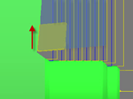

'''De l'extérieur vers l'intérieur'''
De l'intérieur vers l'extérieur
Dans les deux sens
|
 |
|
'''De l'extérieur vers l'intérieur''' |
De l'intérieur vers l'extérieur |
Dans les deux sens |
'''De l'extérieur vers l'intérieur''': sélectionnez cette option pour effectuer une coupe depuis la partie extérieure du brut vers le centre.
'''De l'intérieur vers l'extérieur''': sélectionnez cette option pour effectuer une coupe depuis le centre du brut vers la partie extérieure.
Dans les deux directions: cette option permet d'effectuer une coupe dans les deux directions lors d'une opération de profilage de face.